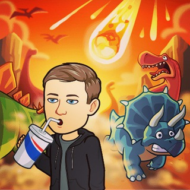

Блог, который продаёт, а не просто ведётся
Я Артём Кузьмицкий. Помогаю экспертам собрать систему, в которой контент приводит клиентов: смысл → механика → серия попыток → статистика → продажи. Без «ведения блога ради блога».

Знакомо?
Три ситуации, с которыми эксперты приходят в мастер-группу.
Люди читают, ставят реакции, пишут «спасибо, полезно». А потом вы открываете статистику продаж и спрашиваете: «А деньги-то где?»
Каждый день заново: что сказать, как сказать, что снять. Контент требует героизма — и рано или поздно блог бросается.
Один месяц — хорошо, другой — тишина. Вы меняете оффер, контент, воронку — а работы становится больше, чем денег.
Контент — это не экзамен, а серия экспериментов
Вместо попытки угадать один идеальный пост мы собираем контентно-продажную машину.
Смотрим на ваш реальный бизнес со стороны: где теряются люди, почему контент не доводит до покупки, что продавать и кому.
Свои темы, форматы, рубрики и запас идей. Каждый кусок контента решает понятную задачу: привлечь, разрушить сомнение, привести в диалог.
Одна идея — несколько заходов, хуков, первых секунд. Один ролик превращается в десять — и рынок сам показывает, что работает.
Зашло — разбираем почему и повторяем механику. Не зашло — теперь мы знаем больше, чем вчера. Так появляется система вместо лотереи.
«Контент Каждый День 2.0» — мастер-группа на 3 месяца
Это не курс с уроками и домашками. Мы берём ваш реальный бизнес и вместе разбираемся, почему он работает именно так — и что конкретно вы будете делать дальше.
- Личная стратегическая встреча с Артёмом: разбор вашей ситуации и план на 3 месяца
- Практикумы и эфиры: контент, охваты, продукты, связка «контент → продажа»
- Разборы проектов участников: где узкое место, что убрать, что масштабировать
- Рабочие механики роста: как одно видео превратить в серию и получать новых людей без рекламы
- Человек рядом, который скажет: «Вот здесь у тебя деньги, а вот это делать не надо»
Результаты участников
Реальные цифры из канала «Экспертный бизнес | Artem Sky».
Александра собрала мини-продукт за 990–1490 ₽, который продаётся без её личного участия: 1100 продаж, без воронки и выгорания. «Я просто обновляю уроки — и всё. Могу снимать видео, сидеть с ребёнком, строить дом».
У Дины одно видео превратилось в серию вариантов с разными хуками: ролики набрали по 3–4 тысячи просмотров, пошли новые подписчики, люди начали писать кодовое слово и приходить в переписки.
«К тебе я ходила, обучалась и ни разу не пожалела. Ты из очень маленького круга людей, у которых реально стоит учиться».
Узнали себя? Давайте посмотрим на вашу ситуацию
Напишите мне в Telegram пару строк о том, что у вас происходит — без брифа на 48 вопросов. Задам несколько вопросов, честно скажу, что вижу, и расскажу, как попасть в мастер-группу.
Написать Артёму в TelegramКодовое слово: КОНТЕНТ
В мессенджере отвечаем сразу, круглосуточно — кружок в правом нижнем углу